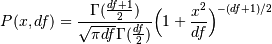

numpy.random.standard_t¶
- numpy.random.standard_t(df, size=None)¶
Standard Student’s t distribution with df degrees of freedom.
A special case of the hyperbolic distribution. As df gets large, the result resembles that of the standard normal distribution (standard_normal).
Parameters : df : int
Degrees of freedom, should be > 0.
size : int or tuple of ints, optional
Output shape. Default is None, in which case a single value is returned.
Returns : samples : ndarray or scalar
Drawn samples.
Notes
The probability density function for the t distribution is

The t test is based on an assumption that the data come from a Normal distribution. The t test provides a way to test whether the sample mean (that is the mean calculated from the data) is a good estimate of the true mean.
The derivation of the t-distribution was forst published in 1908 by William Gisset while working for the Guinness Brewery in Dublin. Due to proprietary issues, he had to publish under a pseudonym, and so he used the name Student.
References
[R232] (1, 2) Dalgaard, Peter, “Introductory Statistics With R”, Springer, 2002. [R233] Wikipedia, “Student’s t-distribution” http://en.wikipedia.org/wiki/Student’s_t-distribution Examples
From Dalgaard page 83 [R232], suppose the daily energy intake for 11 women in Kj is:
>>> intake = np.array([5260., 5470, 5640, 6180, 6390, 6515, 6805, 7515, \ ... 7515, 8230, 8770])
Does their energy intake deviate systematically from the recommended value of 7725 kJ?
We have 10 degrees of freedom, so is the sample mean within 95% of the recommended value?
>>> s = np.random.standard_t(10, size=100000) >>> np.mean(intake) 6753.636363636364 >>> intake.std(ddof=1) 1142.1232221373727
Calculate the t statistic, setting the ddof parameter to the unbiased value so the divisor in the standard deviation will be degrees of freedom, N-1.
>>> t = (np.mean(intake)-7725)/(intake.std(ddof=1)/np.sqrt(len(intake))) >>> import matplotlib.pyplot as plt >>> h = plt.hist(s, bins=100, normed=True)
For a one-sided t-test, how far out in the distribution does the t statistic appear?
>>> >>> np.sum(s<t) / float(len(s)) 0.0090699999999999999 #random
So the p-value is about 0.009, which says the null hypothesis has a probability of about 99% of being true.